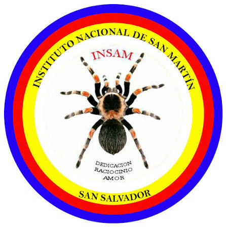

¿A quién va dirigido?
A jóvenes apasionados e interesados en:
Buscamos estudiantes deseosos de una formación técnica sólida, práctica y aplicable desde su primer año.
✳ OFERTA ACADÉMICA · 2027
Desarrollo de Software
y Servicios Digitales
Tu camino empieza aquí: aprende a programar, construye aplicaciones y transforma tus ideas en soluciones reales.
TU FUTURO, PASO A PASO
Un Bachillerato Técnico Vocacional de tres años en el Instituto Nacional de San Martín, El Salvador.
Técnico Vocacional en Desarrollo de Software y Servicios Digitales
UNA FORMACIÓN COMPLETA
Asignaturas básicas transversales para primer y segundo año, junto con los módulos técnicos.
| Asignatura | Primer año | Segundo año |
|---|
El tríptico indica: “Básicas transversales (1.º–2.º año) + módulos técnicos, 39 hrs/sem por año”. Se conservan sus módulos y horas. Consulta con la institución la distribución del horario y la oferta vigente.
MUCHO MÁS QUE ESCRIBIR CÓDIGO
Lo que domina el especialista al egresar.
ENCUENTRA TU LUGAR
A jóvenes apasionados e interesados en:
Buscamos estudiantes deseosos de una formación técnica sólida, práctica y aplicable desde su primer año.
APRENDER HACIENDO
“Formando el talento digital que impulsará el futuro tecnológico e innovador de El Salvador.”
EL SIGUIENTE PASO ES TUYO
Consulta los requisitos, las fechas y el proceso de ingreso con el Instituto Nacional de San Martín.
Solicitar información ↗
Calle “A”, pasaje 6, colonia San Luis y colonia San Joaquín, San Martín, San Salvador.
Redes sociales:
Instituto Nacional de San Martín
Desarrollo de Software y Servicios Digitales · 3 años.